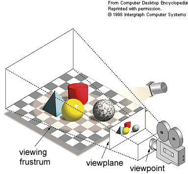

Visualizaciones en JS
Abril 2013
Propósito?
Presentar clientside gráficas informativa y de media y alta complejidad y calidad
Uso
- Representaciones estadísticas / matemáticas
- Animaciones complejas interactivas
Técnicas empleadas
- SVG
- Canvas 2D
- Canvas "3D" (webgl)
- Plugins que hacen uso de estas tecnologías
SVG
Soportado por todos los navegadores principales
Bastante intuitivo para gráficas básicas
Poco amigable para manipulación de código
EJEMPLO
<svg>
<circle cx="100" cy="50" r="40" stroke="black" stroke-width="2" fill="red" />
</svg>
Más ejemplos básicos
Librerías / frameworks para SVG
D3.js
Colección de gráficas de todo tipo (barras, tortas, heatmaps, etc)
Provee una interfaz similar a jquery, para reunir funcionalidad común a las gráficas
Manual IntroductorioManual paso a paso
var margin = {top: 20, right: 40, bottom: 20, left:20},
width = 960 - margin.right - margin.left,
height = 140 - margin.top - margin.bottom,
parse = d3.time.format("%b %Y").parse;
// Scales. Note the inverted range for the y-scale: bigger is up!
var x = d3.time.scale()
.range([0, width]);
var y = d3.scale.linear()
.range([height, 0]);
// Axes
var xAxis = d3.svg.axis()
.scale(x)
.tickSize(-height)
.tickSubdivide(true);
var yAxis = d3.svg.axis()
.scale(y)
.ticks(4)
.orient("right");
// An area generator, for the light fill.
var area = d3.svg.area()
.interpolate("monotone")
.x(function(d) { return x(d.date); })
.y0(height)
.y1(function(d) { return y(d.price); });
// A line generator, for the dark stroke.
var line = d3.svg.line()
.interpolate("monotone")
.x(function(d) { return x(d.date); })
.y(function(d) { return y(d.price); });
d3.csv("../data/stocks.csv", function(data) {
// Filter to one symbol; the S&P 500.
var values = data.filter(function(d) {
return d.symbol == "S&P 500";
});
// Parse dates and numbers. We assume values are sorted by date.
values.forEach(function(d) {
d.date = parse(d.date);
d.price = +d.price;
});
// Compute the minimum and maximum date, and the maximum price.
x.domain([values[0].date, values[values.length - 1].date]);
y.domain([0, d3.max(values, function(d) { return d.price; })]);
// Add an SVG element with the desired dimensions and margin.
var svg = d3.select("body").append("svg")
.attr("width", width + margin.right + margin.left)
.attr("height", height + margin.top + margin.bottom)
.append("g")
.attr("transform", "translate(" + margin.left + "," + margin.top + ")");
// Add the clip path.
svg.append("clipPath")
.attr("id", "clip")
.append("rect")
.attr("width", width)
.attr("height", height);
// Add the area path.
svg.append("path")
.attr("class", "area")
.attr("clip-path", "url(#clip)")
.attr("d", area(values));
// Add the x-axis.
svg.append("g")
.attr("class", "x axis")
.attr("transform", "translate(0," + height + ")")
.call(xAxis);
// Add the y-axis.
svg.append("g")
.attr("class", "y axis")
.attr("transform", "translate(" + width + ",0)")
.call(yAxis);
// Add the line path.
svg.append("path")
.attr("class", "line")
.attr("clip-path", "url(#clip)")
.attr("d", line(values));
// Add a small label for the symbol name.
svg.append("text")
.attr("x", width - 6)
.attr("y", height - 6)
.attr("text-anchor", "end")
.text(values[0].symbol);
// On click, update the x-axis.
svg.on("click", function() {
var n = values.length - 1,
i = Math.floor(Math.random() * n / 2),
j = i + Math.floor(Math.random() * n / 2) + 1;
x.domain([values[i].date, values[j].date]);
var t = svg.transition().duration(750);
t.select(".x.axis").call(xAxis);
t.select(".area").attr("d", area(values));
t.select(".line").attr("d", line(values));
});
});
var xy = d3.geo.azimuthal().scale(240).mode("stereographic"),
circle = d3.geo.greatCircle(),
path = d3.geo.path().projection(xy),
svg = d3.select("body").append("svg");
d3.json("../data/world-countries.json", function(collection) {
svg.selectAll("path")
.data(collection.features)
.enter().append("path")
.attr("d", function(d) { return path(circle.clip(d)); })
.append("title")
.text(function(d) { return d.properties.name; });
});
function refresh(duration) {
var p = svg.selectAll("path");
if (duration) p = p.transition().duration(duration);
p.attr("d", function(d) { return path(circle.clip(d)); });
d3.select("#lon span")
.text(xy.origin()[0]);
d3.select("#lat span")
.text(xy.origin()[1]);
d3.select("#scale span")
.text(xy.scale());
d3.select("#translate-x span")
.text(xy.translate()[0]);
d3.select("#translate-y span")
.text(xy.translate()[1]);
}
var random = d3.random.normal(.5, .1),
data = d3.range(800).map(function() { return [random(), random()]; });
var margin = {top: 10, right: 10, bottom: 20, left: 40},
width = 960 - margin.right - margin.left,
height = 500 - margin.top - margin.bottom;
var x = d3.scale.linear()
.range([0, width]);
var y = d3.scale.linear()
.range([height, 0]);
var svg = d3.select("body").append("svg")
.attr("width", width + margin.right + margin.left)
.attr("height", height + margin.top + margin.bottom)
.append("g")
.attr("transform", "translate(" + margin.left + "," + margin.top + ")");
svg.append("g")
.attr("class", "x axis")
.attr("transform", "translate(0," + height + ")")
.call(d3.svg.axis().scale(x).orient("bottom"));
svg.append("g")
.attr("class", "y axis")
.call(d3.svg.axis().scale(y).orient("left"));
var circle = svg.append("g").selectAll("circle")
.data(data)
.enter().append("circle")
.attr("transform", function(d) { return "translate(" + x(d[0]) + "," + y(d[1]) + ")"; })
.attr("r", 3.5);
svg.append("g")
.attr("class", "brush")
.call(d3.svg.brush().x(x).y(y)
.on("brushstart", brushstart)
.on("brush", brushmove)
.on("brushend", brushend));
function brushstart() {
svg.classed("selecting", true);
}
function brushmove() {
var e = d3.event.target.extent();
circle.classed("selected", function(d) {
return e[0][0] <= d[0] && d[0] <= e[1][0]
&& e[0][1] <= d[1] && d[1] <= e[1][1];
});
}
function brushend() {
svg.classed("selecting", !d3.event.target.empty());
}
var margin = {top: 19, right: 20, bottom: 20, left: 19},
width = 960 - margin.right - margin.left, // width
height = 136 - margin.top - margin.bottom, // height
cellSize = 17; // cell size
var day = d3.time.format("%w"),
week = d3.time.format("%U"),
format = d3.time.format("%Y-%m-%d");
var color = d3.scale.quantile()
.range(d3.range(9).reverse());
var svg = d3.select("#chart").selectAll("svg")
.data(d3.range(1993, 2011))
.enter().append("svg")
.attr("width", width + margin.right + margin.left)
.attr("height", height + margin.top + margin.bottom)
.attr("class", "RdYlGn")
.append("g")
.attr("transform", "translate(" + (margin.left + (width - cellSize * 53) / 2) + "," + (margin.top + (height - cellSize * 7) / 2) + ")");
svg.append("text")
.attr("transform", "translate(-6," + cellSize * 3.5 + ")rotate(-90)")
.attr("text-anchor", "middle")
.text(String);
var rect = svg.selectAll("rect.day")
.data(function(d) { return d3.time.days(new Date(d, 0, 1), new Date(d + 1, 0, 1)); })
.enter().append("rect")
.attr("class", "day")
.attr("width", cellSize)
.attr("height", cellSize)
.attr("x", function(d) { return week(d) * cellSize; })
.attr("y", function(d) { return day(d) * cellSize; })
.datum(format);
rect.append("title")
.text(function(d) { return d; });
svg.selectAll("path.month")
.data(function(d) { return d3.time.months(new Date(d, 0, 1), new Date(d + 1, 0, 1)); })
.enter().append("path")
.attr("class", "month")
.attr("d", monthPath);
d3.csv("vix.csv", function(csv) {
var data = d3.nest()
.key(function(d) { return d.Date; })
.rollup(function(d) { return d[0].Open; })
.map(csv);
color.domain(d3.values(data));
rect.filter(function(d) { return d in data; })
.attr("class", function(d) { return "day q" + color(data[d]) + "-9"; })
.select("title")
.text(function(d) { return d + ": " + data[d]; });
});
function monthPath(t0) {
var t1 = new Date(t0.getFullYear(), t0.getMonth() + 1, 0),
d0 = +day(t0), w0 = +week(t0),
d1 = +day(t1), w1 = +week(t1);
return "M" + (w0 + 1) * cellSize + "," + d0 * cellSize
+ "H" + w0 * cellSize + "V" + 7 * cellSize
+ "H" + w1 * cellSize + "V" + (d1 + 1) * cellSize
+ "H" + (w1 + 1) * cellSize + "V" + 0
+ "H" + (w0 + 1) * cellSize + "Z";
}
Canvas 2D
- se define un tag CANVAS html en el dom
- altamente ligado a JS
- muchas primitivas similares a svg, pero con métodos más descriptivos (dibujar línea, rellenar, etc)
- otras funciones como aplicar matriz de transformación
- Dibujar imágenes existentes dentro del canvas
- Tratar el canvas como una imagen (por ej, recuperar el contenido dentro de un área)
<CANVAS height="200px" width="200px" id="canvas1"></CANVAS>
var canvas1 = document.getElementById("canvas1");
var ctx=canvas1.getContext("2d");
ctx.beginPath();
ctx.moveTo(10,10);
ctx.lineTo(0,190);
ctx.lineTo(200,200);
ctx.lineTo(190,0);
ctx.closePath();
ctx.strokeStyle = "0f0";
ctx.stroke();
ctx.fillStyle ="f00";
ctx.fill();
<CANVAS height="200px" width="200px" style="background:white" id="canvas1"></CANVAS>
var canvas2 = document.getElementById("canvas2");
var ctx=canvas2.getContext("2d");
var img= new Image();
img.src="images/ok.png";
img.onload=function(){
ctx.drawImage(img, 10, 10);
};
Principales métodos del contexto
void save( )
void restore( )
//Transformaciones
void scale( float x, float y)
void rotate( float angle)
void translate( float x, float y)
void transform(float m11, float m12,float m21, float m22,float dx, float dy)
void setTransform(float m11, float m12,float m21, float m22,float dx, float dy)
//Rectángulos
void clearRect(float x, float y, float w, float h)
void fillRect(float x, float y, float w, float h)
void strokeRect(float x, float y, float w, float h)
Path (trazas)
void beginPath( )
void closePath( )
void fill( )
void stroke( )
void clip( )
void moveTo( float x, float y)
void lineTo( float x, float y)
void quadraticCurveTo(float cpx, float cpy,float x, float y )
void bezierCurveTo(float cp1x, float cp1y,float cp2x, float cp2y,float x, float y )
void arcTo(float x1, float y1,float x2, float y2, float radius )
void arc(float x, float y, float radius,float startAngle, float endAngle,boolean anticlockwise )
void rect( float x, float y, float w, float h)
boolean isPointInPath( float x, float y)
Manipulación a nivel de px
ImageData createImageData( float sw, float sh)
ImageData createImageData( ImageData imagedata)
ImageData getImageData(float sx, float sy, float sw, float sh)
void putImageData(ImageData imagedata,float dx, float dy,[Optional] float dirtyX, float dirtyY,float dirtyWidth, float dirtyHeight)
//ImageData interface width
unsigned long [readonly]
height unsigned long [readonly]
data CanvasPixelArray [readonly]
//CanvasPixelArray interface
length unsigned long [readonly]
Canvas "3D"/WebGL
- Basado en OpenGL
- Accede directamente a GPU
- Sintaxis poco familiar y conceptos específicos de cálculos de matrices orientados a transformaciones
Conceptos
Ejemplo de uso (MDN)
<body onload="start()">
<canvas id="glcanvas" width="640" height="480">
Your browser doesn't appear to support the HTML5 <canvas> element.
</canvas>
</body>
Inicialización del contexto
function start() {
var canvas = document.getElementById("glcanvas");
initWebGL(canvas); // Initialize the GL context
// Only continue if WebGL is available and working
if (gl) {
gl.clearColor(0.0, 0.0, 0.0, 1.0); // Set clear color to black, fully opaque
gl.enable(gl.DEPTH_TEST); // Enable depth testing
gl.depthFunc(gl.LEQUAL); // Near things obscure far things
gl.clear(gl.COLOR_BUFFER_BIT|gl.DEPTH_BUFFER_BIT);
// Clear the color as well as the depth buffer.
}
}
function initWebGL(canvas) {
// Initialize the global variable gl to null.
gl = null;
try {
// Try to grab the standard context. If it fails, fallback to experimental.
gl = canvas.getContext("webgl") || canvas.getContext("experimental-webgl");
}
catch(e) {}
// If we don't have a GL context, give up now
if (!gl) {
alert("Unable to initialize WebGL. Your browser may not support it.");
}
}
Shaders
function initShaders() {
var fragmentShader = getShader(gl, "shader-fs");
var vertexShader = getShader(gl, "shader-vs");
// Create the shader program
var shaderProgram = gl.createProgram();
gl.attachShader(shaderProgram, vertexShader);
gl.attachShader(shaderProgram, fragmentShader);
gl.linkProgram(shaderProgram);
// If creating the shader program failed, alert
if (!gl.getProgramParameter(shaderProgram, gl.LINK_STATUS)) {
alert("Unable to initialize the shader program.");
}
gl.useProgram(shaderProgram);
vertexPositionAttribute = gl.getAttribLocation(shaderProgram, "aVertexPosition");
gl.enableVertexAttribArray(vertexPositionAttribute);
}
//The getShader() routine fetches a shader program with the specified name from the DOM, returning the compiled shader program to the caller, or null if it couldn't be loaded or compiled.
function getShader(gl, id) {
var shaderScript, theSource, currentChild, shader;
shaderScript = document.getElementById(id);
if (!shaderScript) {
return null;
}
theSource = "";
currentChild = shaderScript.firstChild;
while(currentChild) {
if (currentChild.nodeType == currentChild.TEXT_NODE) {
theSource += currentChild.textContent;
}
currentChild = currentChild.nextSibling;
}
//Once the element with the specified ID is found, its text is read into the variable theSource
if (shaderScript.type == "x-shader/x-fragment") {
shader = gl.createShader(gl.FRAGMENT_SHADER);
} else if (shaderScript.type == "x-shader/x-vertex") {
shader = gl.createShader(gl.VERTEX_SHADER);
} else {
// Unknown shader type
return null;
}
gl.shaderSource(shader, theSource);
// Compile the shader program
gl.compileShader(shader);
// See if it compiled successfully
if (!gl.getShaderParameter(shader, gl.COMPILE_STATUS)) {
alert("An error occurred compiling the shaders: " + gl.getShaderInfoLog(shader));
return null;
}
return shader;
}
Definiendo los shaders (en el DOM)
<script id="shader-fs" type="x-shader/x-fragment">
void main(void) {
gl_FragColor = vec4(1.0, 1.0, 1.0, 1.0);
}
</script>
<script id="shader-vs" type="x-shader/x-vertex">
attribute vec3 aVertexPosition;
uniform mat4 uMVMatrix;
uniform mat4 uPMatrix;
void main(void) {
gl_Position = uPMatrix * uMVMatrix * vec4(aVertexPosition, 1.0);
}
</script>
Inicializando, creando un cuadrado y dibujando
var horizAspect = 480.0/640.0;
function initBuffers() {
squareVerticesBuffer = gl.createBuffer();
gl.bindBuffer(gl.ARRAY_BUFFER, squareVerticesBuffer);
var vertices = [
1.0, 1.0, 0.0,
-1.0, 1.0, 0.0,
1.0, -1.0, 0.0,
-1.0, -1.0, 0.0
];
gl.bufferData(gl.ARRAY_BUFFER, new Float32Array(vertices), gl.STATIC_DRAW);
}
function drawScene() {
gl.clear(gl.COLOR_BUFFER_BIT | gl.DEPTH_BUFFER_BIT);
perspectiveMatrix = makePerspective(45, 640.0/480.0, 0.1, 100.0);
loadIdentity();
mvTranslate([-0.0, 0.0, -6.0]);
gl.bindBuffer(gl.ARRAY_BUFFER, squareVerticesBuffer);
gl.vertexAttribPointer(vertexPositionAttribute, 3, gl.FLOAT, false, 0, 0);
setMatrixUniforms();
gl.drawArrays(gl.TRIANGLE_STRIP, 0, 4);
}
Agregar un cubo al contexto
var vertices = [
// Front face
-1.0, -1.0, 1.0,
1.0, -1.0, 1.0,
1.0, 1.0, 1.0,
-1.0, 1.0, 1.0,
// Back face
-1.0, -1.0, -1.0,
-1.0, 1.0, -1.0,
1.0, 1.0, -1.0,
1.0, -1.0, -1.0,
// Top face
-1.0, 1.0, -1.0,
-1.0, 1.0, 1.0,
1.0, 1.0, 1.0,
1.0, 1.0, -1.0,
// Bottom face
-1.0, -1.0, -1.0,
1.0, -1.0, -1.0,
1.0, -1.0, 1.0,
-1.0, -1.0, 1.0,
// Right face
1.0, -1.0, -1.0,
1.0, 1.0, -1.0,
1.0, 1.0, 1.0,
1.0, -1.0, 1.0,
// Left face
-1.0, -1.0, -1.0,
-1.0, -1.0, 1.0,
-1.0, 1.0, 1.0,
-1.0, 1.0, -1.0
];
var colors = [
[1.0, 1.0, 1.0, 1.0], // Front face: white
[1.0, 0.0, 0.0, 1.0], // Back face: red
[0.0, 1.0, 0.0, 1.0], // Top face: green
[0.0, 0.0, 1.0, 1.0], // Bottom face: blue
[1.0, 1.0, 0.0, 1.0], // Right face: yellow
[1.0, 0.0, 1.0, 1.0] // Left face: purple
];
var generatedColors = [];
for (j=0; j<6; j++) {
var c = colors[j];
for (var i=0; i<4; i++) {
generatedColors = generatedColors.concat(c);
}
}
cubeVerticesColorBuffer = gl.createBuffer();
gl.bindBuffer(gl.ARRAY_BUFFER, cubeVerticesColorBuffer);
gl.bufferData(gl.ARRAY_BUFFER, new Float32Array(generatedColors), gl.STATIC_DRAW);
//Once the vertex arrays are generated, we need to build the element array.
cubeVerticesIndexBuffer = gl.createBuffer();
gl.bindBuffer(gl.ELEMENT_ARRAY_BUFFER, cubeVerticesIndexBuffer);
// This array defines each face as two triangles, using the
// indices into the vertex array to specify each triangle's
// position.
var cubeVertexIndices = [
0, 1, 2, 0, 2, 3, // front
4, 5, 6, 4, 6, 7, // back
8, 9, 10, 8, 10, 11, // top
12, 13, 14, 12, 14, 15, // bottom
16, 17, 18, 16, 18, 19, // right
20, 21, 22, 20, 22, 23 // left
]
// Now send the element array to GL
gl.bufferData(gl.ELEMENT_ARRAY_BUFFER,
new Uint16Array(cubeVertexIndices), gl.STATIC_DRAW);
function drawScene() {
// Clear the canvas before we start drawing on it.
gl.clear(gl.COLOR_BUFFER_BIT | gl.DEPTH_BUFFER_BIT);
// Establish the perspective with which we want to view the
// scene. Our field of view is 45 degrees, with a width/height
// ratio of 640:480, and we only want to see objects between 0.1 units
// and 100 units away from the camera.
perspectiveMatrix = makePerspective(45, 640.0/480.0, 0.1, 100.0);
// Set the drawing position to the "identity" point, which is
// the center of the scene.
loadIdentity();
// Now move the drawing position a bit to where we want to start
// drawing the cube.
mvTranslate([-0.0, 0.0, -6.0]);
// Save the current matrix, then rotate before we draw.
mvPushMatrix();
mvRotate(cubeRotation, [1, 1, 1]);
mvTranslate([cubeXOffset, cubeYOffset, cubeZOffset]);
// Draw the cube by binding the array buffer to the cube's vertices
// array, setting attributes, and pushing it to GL.
gl.bindBuffer(gl.ARRAY_BUFFER, cubeVerticesBuffer);
gl.vertexAttribPointer(vertexPositionAttribute, 3, gl.FLOAT, false, 0, 0);
// Set the colors attribute for the vertices.
gl.bindBuffer(gl.ARRAY_BUFFER, cubeVerticesColorBuffer);
gl.vertexAttribPointer(vertexColorAttribute, 4, gl.FLOAT, false, 0, 0);
// Draw the cube.
gl.bindBuffer(gl.ELEMENT_ARRAY_BUFFER, cubeVerticesIndexBuffer);
setMatrixUniforms();
gl.drawElements(gl.TRIANGLES, 36, gl.UNSIGNED_SHORT, 0);
// Restore the original matrix
mvPopMatrix();
// Update the rotation for the next draw, if it's time to do so.
var currentTime = (new Date).getTime();
if (lastCubeUpdateTime) {
var delta = currentTime - lastCubeUpdateTime;
cubeRotation += (30 * delta) / 1000.0;
//cubeXOffset += xIncValue * ((30 * delta) / 1000.0);
//cubeYOffset += yIncValue * ((30 * delta) / 1000.0);
//cubeZOffset += zIncValue * ((30 * delta) / 1000.0);
/*if (Math.abs(cubeYOffset) > 2.5) {
xIncValue = -xIncValue;
yIncValue = -yIncValue;
zIncValue = -zIncValue;
}*/
}
lastCubeUpdateTime = currentTime;
}
Frameworks que hacen uso de Canvas
Three.jsPhiloGL
GLGE
Three.js
- genera sencillamente contextos de 2d y webgl
- los usa transparentemente, son intercambiables
- explicita conceptos ímplícitos en webGL propios del modelado en 3D (render, cámara, escena,iluminación, etc)
var render;
var canvasWidth = 500;
var canvasHeight = 500;
render = new THREE.WebGLRenderer(); // también soporta CanvasRenderer() y DomRenderer()
render.setClearColorHex(0x000000, 1);
render.setSize(canvasWidth, canvasHeight);
// la cámara de la escena. Le hemos puesto el FOV a 45 º, el ratio de aspecto que tiene el canvas donde se dibujará el render, y también le decimos que no se dibujen los objetos que están a menos de 0.1 o a más de 100 unidades de distancia de la cámara, aunque se encuentren dentro del FOV.
var camara;
camara = new THREE.PerspectiveCamera(45, canvasWidth / canvasHeight, 0.1, 100);
escena.add(camara);
camara.position.set(0, 0, 0);
camara.lookAt(escena.position);
//Definiendo un material para objetos a agregar a la escena
var material = new THREE.MeshBasicMaterial({
color:0xFFFFFF,
side:THREE.DoubleSide //el skin es visible desde cualquier ángulo
});
//Definiendo geometria de un objeto
var cuadradoGeometria = new THREE.Geometry();
cuadradoGeometria.vertices.push(new THREE.Vector3(-1.0, 1.0, 0.0));
cuadradoGeometria.vertices.push(new THREE.Vector3( 1.0, 1.0, 0.0));
cuadradoGeometria.vertices.push(new THREE.Vector3( 1.0, -1.0, 0.0));
cuadradoGeometria.vertices.push(new THREE.Vector3(-1.0, -1.0, 0.0));
cuadradoGeometria.faces.push(new THREE.Face4(0, 1, 2, 3));
cuadrado.position.set(1.5, 0.0, -7.0);
escena.add(cuadrado);
render.render(escena, camara);
Ejemplo del cubo con three
var container;
var camera, scene, renderer;
var cube, plane;
var cubeRotation = 0;
var windowHalfX = window.innerWidth / 2;
var windowHalfY = window.innerHeight / 2;
init();
animate();
function init() {
container = document.createElement( 'div' );
document.body.appendChild( container );
camera = new THREE.PerspectiveCamera( 70, window.innerWidth / window.innerHeight, 1, 1000 );
camera.position.y = 150;
camera.position.z = 500;
scene = new THREE.Scene();
// Cube
var geometry = new THREE.CubeGeometry( 200, 200, 200 );
geometry.faces[ 0 ].color.setHex( 0xffffff );
geometry.faces[ 1 ].color.setHex( 0xff0000 );
geometry.faces[ 2 ].color.setHex( 0x00ff00 );
geometry.faces[ 3 ].color.setHex( 0x0000ff );
geometry.faces[ 4 ].color.setHex( 0xffff00 );
geometry.faces[ 5 ].color.setHex( 0xff00ff );
var material = new THREE.MeshBasicMaterial( { vertexColors: THREE.FaceColors } );
cube = new THREE.Mesh( geometry, material );
cube.position.y = 150;
scene.add( cube );
renderer = new THREE.CanvasRenderer();
renderer.setSize( window.innerWidth, window.innerHeight );
container.appendChild( renderer.domElement );
}
function animate() {
requestAnimationFrame( animate );
render();
}
function render() {
cubeRotation = 15 / 1000.0;
cube.rotation.y += cubeRotation;
cube.rotation.x += cubeRotation;
cube.rotation.z += cubeRotation;
renderer.render( scene, camera );
}
Frameworks varios
Google Chartsjs-sequence-diagrams
TeeChart (versión para html5)
MathBox.js
TeeChart
var three, Chart1;
function draw() {
// Create 3D WebGL context:
three = new Tee.Three("canvas1");
//Example, shadows:
three.setShowShadows(true);
// Create Chart:
Chart1 = new Tee.Chart(three);
// Add Bar series to Chart:
Chart1.addSeries(new Tee.Bar([5,3,2,7,1] , ["One", "Two", "Three", "Four", "Five" ]) );
Chart1.title.text="TeeChart for WebGL (tm)";
Chart1.footer.text="Made with Three.js";
Chart1.walls.back.size=0.2;
Chart1.walls.left.size=10;
Chart1.walls.bottom.size=10;
Chart1.walls.back.format.transparency=0.2;
// Valid webGL ?
if (three.isEnabled()) {
Chart1.draw();
animate();
}
else
{
// Show message (WebGL not available) :
Detector.addGetWebGLMessage();
// Disable WebGL and use HTML5 2D Canvas:
three.setEnabled(false, Chart1);
}
// Loop
function animate() {
three.update();
requestAnimationFrame( animate );
}
}
MathBox
/**
* Bootstrap
*/
DomReady.ready(function() {
ThreeBox.preload([
'../shaders/snippets.glsl.html',
], function () {
// MathBox boilerplate
var mathbox = window.mathbox = mathBox({
cameraControls: true,
cursor: true,
controlClass: ThreeBox.OrbitControls,
elementResize: true,
fullscreen: true,
screenshot: true,
stats: false,
scale: 1,
}).start();
// Viewport camera/setup
mathbox
// Polar viewport
.viewport({
type: 'polar',
range: [[-π, π], [-3, 6], [-1, 1]],
scale: [1, 1, 1],
polar: 0,
})
.camera({
orbit: 4,
phi: τ/4-.8,
theta: 1.1,
})
.transition(300)
// Surface function
.surface({
shaded: true,
domain: [[-π, π], [-1, 1]],
n: [48, 32],
expression: surfaceFunc,
})
// Animate viewport between polar and cartesian
mathbox.world().loop().hookPreRender(function () {
var t = +new Date() * .0003;
mathbox.set('viewport', { polar: Math.sin(t) * .5 + .5 });
});
});
});
// Arbitrary function (function itself)
function surfaceFunc(x, y) {
return [x, 4 + -1 + Math.cos(x*2) + Math.cos(y*5), y];
}
/**
* Bootstrap
*/
DomReady.ready(function() {
ThreeBox.preload([
'../shaders/snippets.glsl.html',
], function () {
// MathBox boilerplate
var mathbox = window.mathbox = mathBox({
cameraControls: true,
cursor: true,
controlClass: ThreeBox.OrbitControls,
elementResize: true,
fullscreen: true,
screenshot: true,
stats: false,
scale: 1,
}).start();
// Viewport camera/setup
mathbox
// Cartesian viewport
.viewport({
type: 'cartesian',
range: [[-3, 3], [-2, 2], [-1, 1]],
scale: [1, 1, 1],
})
.camera({
orbit: 3.5,
phi: τ/6,
theta: 0.3,
})
.transition(300)
// Axes
.axis({
id: 'a',
axis: 0,
color: 0xa0a0a0,
ticks: 5,
lineWidth: 2,
size: .05,
labels: true,
})
.axis({
id: 'b',
axis: 1,
color: 0xa0a0a0,
ticks: 5,
lineWidth: 2,
size: .05,
zero: false,
labels: true,
})
.axis({
id: 'c',
axis: 2,
color: 0xa0a0a0,
ticks: 5,
lineWidth: 2,
size: .05,
zero: false,
labels: true,
})
// Grid
.grid({
axis: [0, 2],
color: 0xc0c0c0,
lineWidth: 1,
})
// Move axis
setTimeout(function () {
mathbox.set('#c', { zero: true });
mathbox.animate('#a', {
offset: [0, 0, -1],
}, { duration: 1500 });
mathbox.animate('#b', {
offset: [-3, 0, -1],
}, { duration: 1500 });
mathbox.animate('#c', {
offset: [-3, 0, 0],
}, { duration: 1500 });
}, 3000);
// Move axis + grid
setTimeout(function () {
mathbox.set('#b', { labels: false, arrow: false });
mathbox.axis({
id: 'd',
axis: 1,
offset: [3, 0, -1],
ticks: 5,
lineWidth: 2,
color: 0xa0a0a0,
labels: true,
arrow: false,
});
mathbox.axis({
id: 'e',
axis: 1,
offset: [-3, 0, 1],
ticks: 5,
lineWidth: 2,
arrow: false,
color: 0xa0a0a0,
});
mathbox.axis({
id: 'f',
axis: 1,
offset: [3, 0, 1],
ticks: 5,
lineWidth: 2,
arrow: false,
color: 0xa0a0a0,
});
mathbox.animate('grid', {
offset: [0, -2, 0],
}, { duration: 1500 });
mathbox.grid({
axis: [0, 2],
ticks: [2, 1],
offset: [0, 2, 0],
color: 0xc0c0c0,
lineWidth: 1,
});
mathbox.animate('camera', { orbit: 7, phi: τ*5/8 + .2 }, { duration: 2500 });
mathbox.animate('#a', {
offset: [0, -2, -1],
}, { duration: 1500 });
mathbox.animate('#c', {
offset: [-3, -2, 0],
}, { duration: 1500 });
mathbox.vector({
n: 2,
data: [[0, 0, 0], [1, 1, 1], [-1, -1, -1], [0, 1, .5]],
});
}, 6000);
});
});
Preguntas?
facundo.a.ferrero@accenture.com @facundo_ferrero
@facundo_ferrero